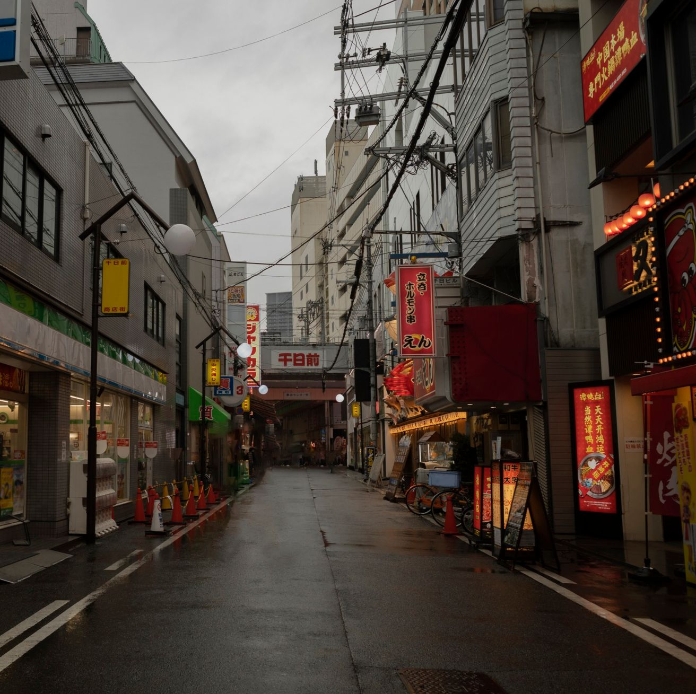

Experience the Thrill of Tokyo's Unique Vibe
Uncover the secrets of Tokyo's rich history, unique traditions, and
contemporary art scene.

Explore By Interest
Tokyo's animated spirit
Explore the vibrant anime and manga scene in Tokyo, a city that has inspired
some of the most beloved anime series and films of all time.
Tokyo's historic charm
From ancient temples to modern skyscrapers, Tokyo's architecture reflects the
city's unique blend of tradition and modernity, and is a testament to its enduring spirit.

Tokyo's urban vibe
Get lost in the energy of Tokyo's bustling streets, where the city's diverse
cultures and lifestyles come together to create a unique and vibrant atmosphere.
Tokyo's timeless beauty
Discover Tokyo's rich artistic heritage through its museums, galleries, and
traditional arts, which reflect the city's long and storied history.
To me, Tokyo is like a character in its own right. It has a personality, a spirit,
and a vibe that you can feel as soon as you arrive.
Join Us!
Join the Tokyo Vibes community and embrace the city's spirit!